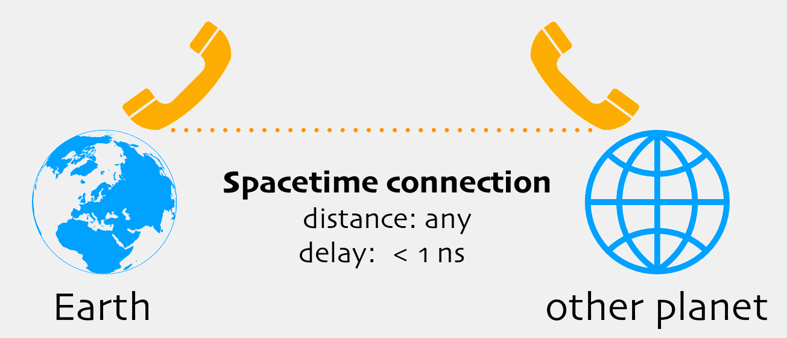

FTLightApp - Connected applications across platforms

Concepts
The following concepts are intended to be implemented under a "FTLightApp" trademark:
appreciating a
Bewusstseinsrevolution
while preparing for going to the
Moon and to Mars
Babel Tower
- understand all languages on Earth
ready for point-to-point spacetime connections
dynamic communication network
unique
"FTLight" protocol
dynamic app user interface
dynamic app functionality
platform independent